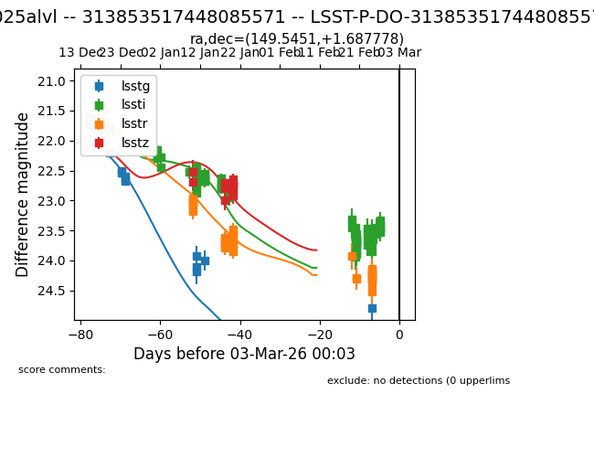
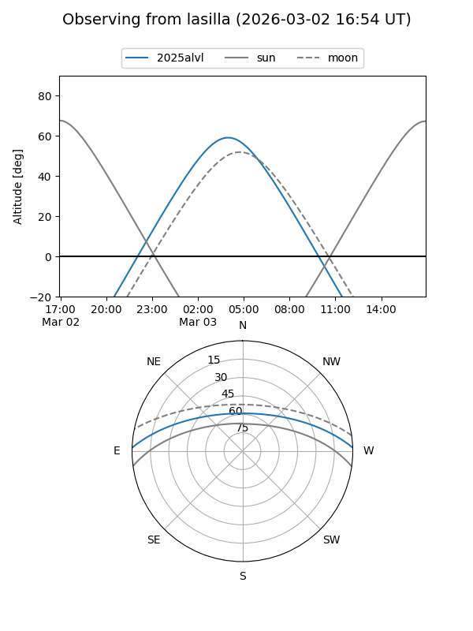
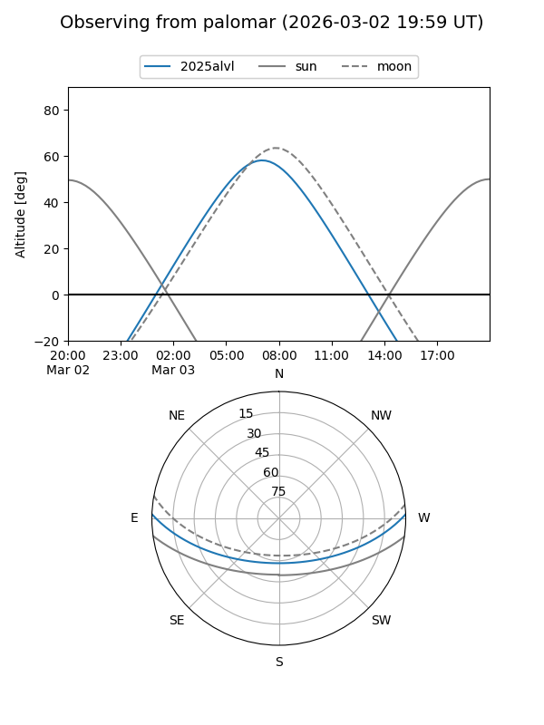

2025alvl
Target 2025alvl at 2026-03-03 00:04
Aliases and brokers:
TNS: link
YSE: link
alt names
LSST-P-DO-313853517448085571 (lsst)
313853517448085571 (fink_lsst)
2025alvl (tns,yse)
Coordinates:
equatorial (ra, dec) = 149.5451,+1.68778
equatorial (HMS+DMS) = 09:58:10.82,+01:41:16.00
galactic (l, b) = (236.9405,+41.35366)
Flags:
Photometry:
last lsstg=24.79, lssti=23.50, lsstr=24.24, lsstz=22.87
11 lsstg, 78 lssti, 41 lsstr, 11 lsstz detections
Lightcurve

Visibility


Additional plots